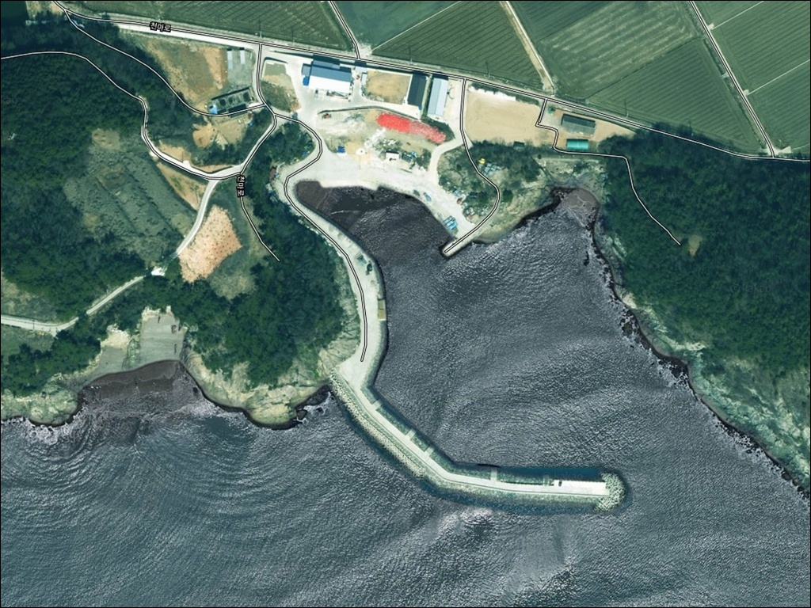
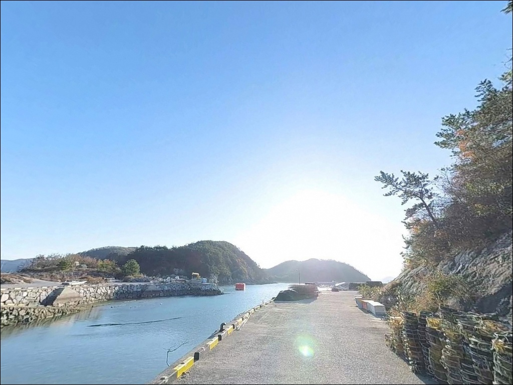
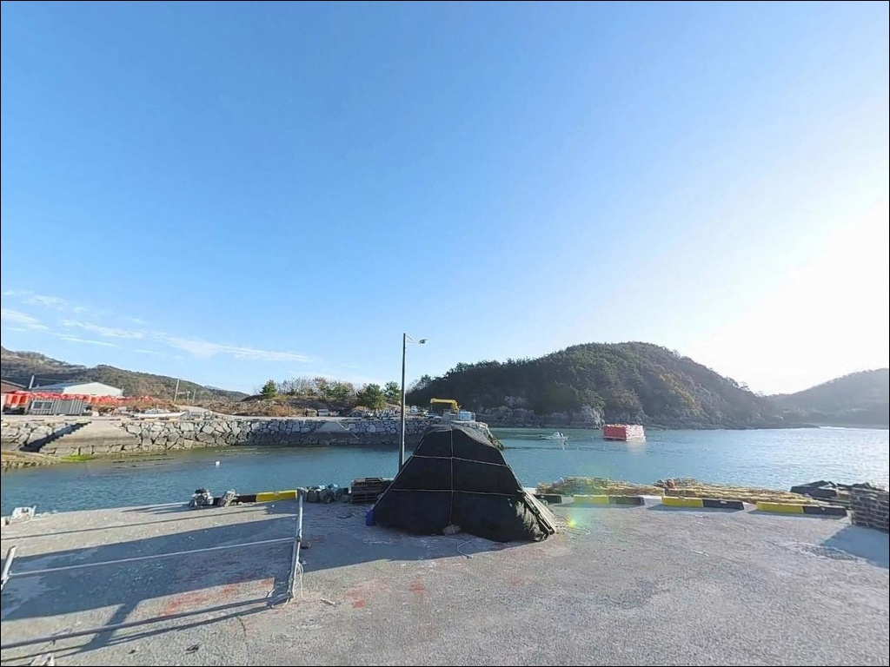
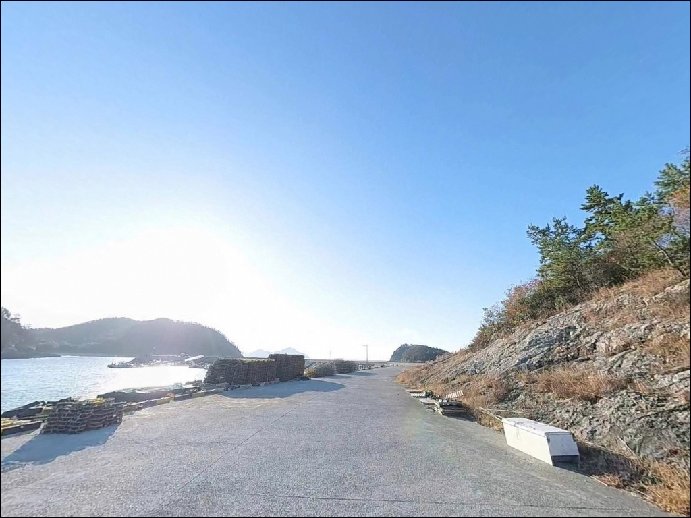
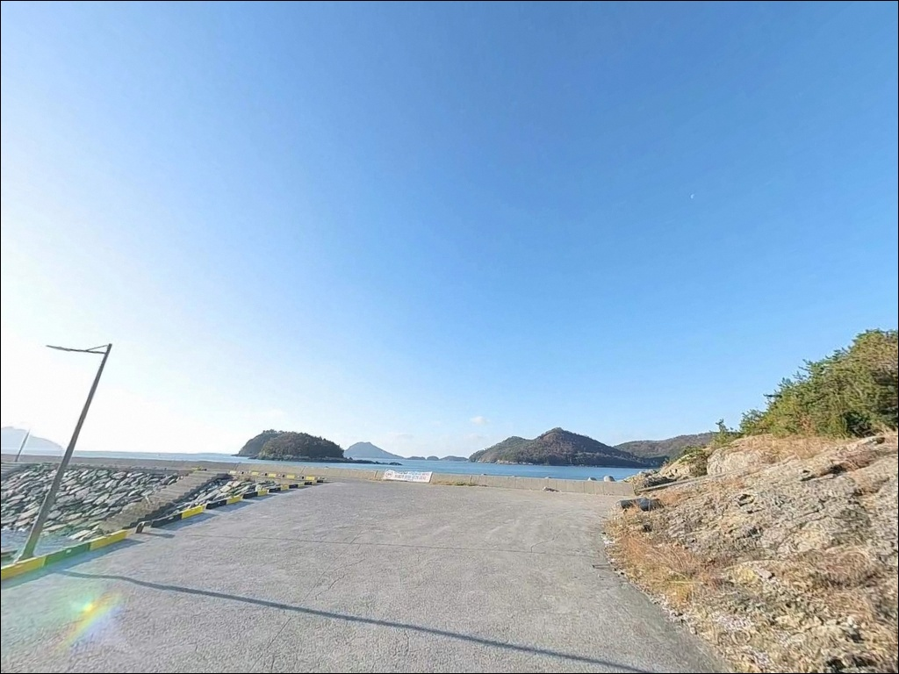
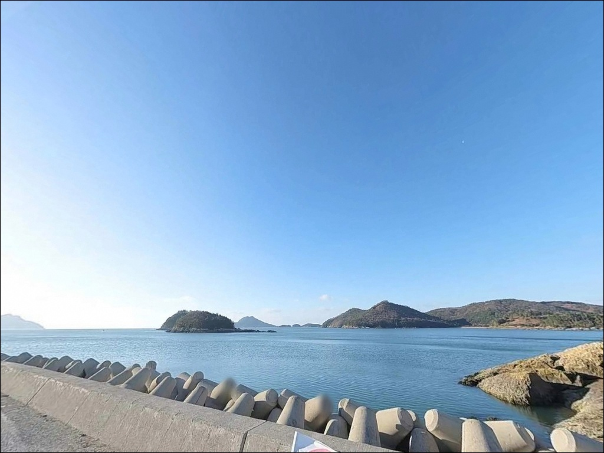
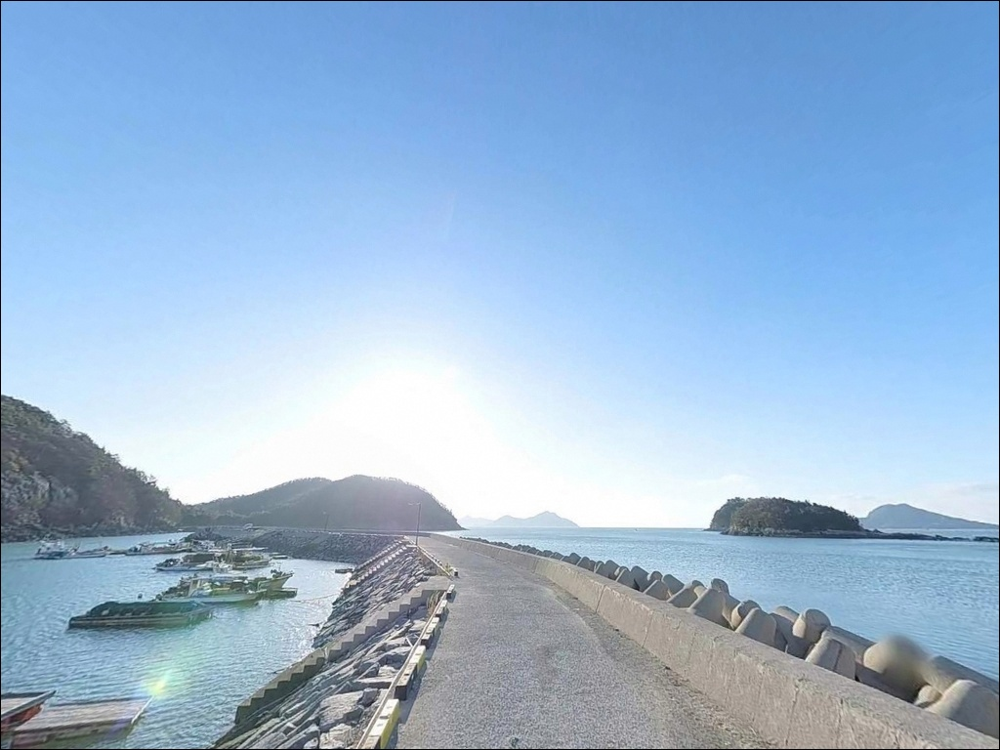
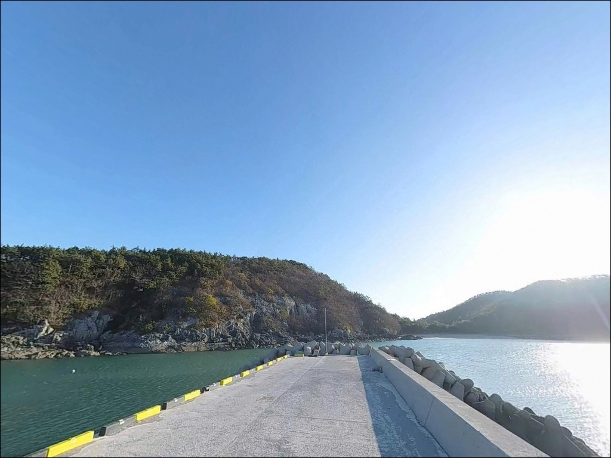
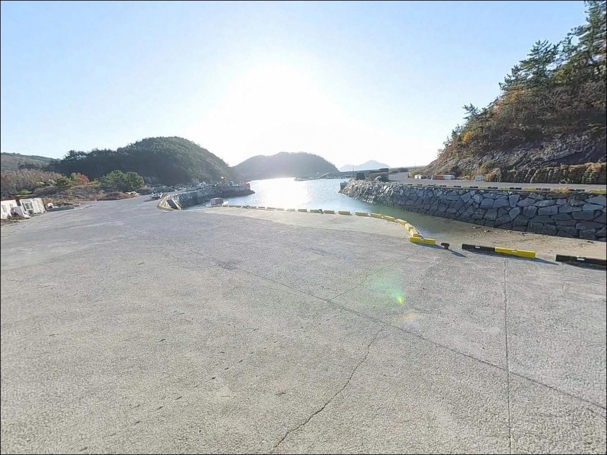

사리 물때에 채비 털리던 고흥 연신목방파제, 조금 4물부터 7물에 들어온 입질


포인트 안내
남성항(연신목방파제)
전남 고흥군 포두면 남성리 142-12
거금수도 물때를 확인하지 않고 이 방파제를 찾으면
강한 조류에 채비가 버티지 못해
낚시다운 낚시를 하기 어렵습니다.
조금 전후 물때를 맞춰야
이 포인트의 지형 조건이 제대로 살아납니다.
고흥반도 남동쪽 포두면 남성리 해안에 자리한
이 방파제는 거금수도를 마주보는 형태로,
조류 흐름이 꾸준히 형성되는 수로형 해역에 접해 있습니다.
원투, 찌낚시, 루어, 에깅까지
복수의 낚시 방식으로 접근할 수 있는 구조이며,
남성리 해수욕장이 400m 거리에 있어
차박과 낚시를 함께 묶기 좋은 위치입니다.
이 글은 남성항(연신목방파제)의
진입 환경, 낚시 여건, 차박 조건,
물때 판단 기준에 집중합니다.
조황 단정이나 특정 어종 보장은
이 글의 범위에 포함되지 않습니다.

1. 진입 동선과 포인트 접근성
남성항(연신목방파제)는 포두면 남성리 해안도로에서
방파제 입구까지 포장도로가 이어지는 구조입니다.
교행이 가능한 폭의 도로가 형성되어 있어
승용차와 SUV 모두 진입이 가능하며,
직선 구간이 많아 야간 진입 동선도 단순한 편입니다.
다만 남성리 마을 안길을 통과하는 구간은
폭이 다소 좁아질 수 있습니다.
대형 차량이라면 방파제 입구 진입 시
회전 반경을 사전에 확인해 두는 편이 안전합니다.
초행이라면 위성지도로 진입로를 먼저 살피고
출발하는 것이 헛걸음을 막습니다.
주차는 방파제 초입 공터와
남성리 해수욕장 배후 도로변을 활용합니다.
방파제 기단부는 선박 출입 동선과 겹칠 수 있으므로
어선 이동에 방해가 되지 않는 자리를
먼저 확인하고 주차하는 것이 기본입니다.

2. 차박 환경과 야간 체류 여건
방파제 인근은 남성리 어촌 마을과 인접해 있습니다.
완전한 외딴 포인트는 아니며
생활 조명 일부와 소규모 차량 통행이 존재합니다.
야간에는 방파제 구간에 따라 조명이 제한적인 구역이 있어
헤드랜턴과 집어등은 필수 장비입니다.
차박을 목적으로 한다면
400m 거리의 남성리 해수욕장 야영장을 함께 검토하는 것이 좋습니다.
포두면사무소(061-830-6314)에 문의하면
야영 가능 여부를 확인할 수 있습니다.
방파제 주변 공터에서의 차박은
어선 출입 동선과 마을 소음 문제를
사전에 파악해두는 편이 현실적입니다.
거금수도 특성상 바람 영향이 날에 따라 다릅니다.
외해 방향으로 너울이 유입되는 조건이 되면
방파제 외항 쪽 체류는 불편해질 수 있습니다.
출발 전 기상청 파고 예보를 확인하고
바람 방향과 세기를 함께 체크하는 것이 기본입니다.


3. 주변 편의시설과 사전 자급 준비
남성항(연신목방파제) 반경 3km 이내에는
편의점 체인이나 식당 확정 정보가 없습니다.
연신목 마을 자체는 조용한 소규모 어촌으로,
식수·얼음·낚시 소품은 출발 전에 완비해야 합니다.
반경 10km 내 포두면 소재지로 이동하면
농협 하나로마트, 주유소, 식당 등
기본 인프라를 이용할 수 있습니다.
부족한 소품이 있다면 이 동선을 활용하는 편이 효율적이며,
응급 상황 시에는 고흥읍 방면으로
의료기관 접근이 가능합니다.
포두면 금성낚시가 포두면 인근에 자리하고 있어
낚시 소모품이나 미끼 보충을 위한
선택지가 됩니다.
출발 전 연락처 확인 후 재고 여부를 먼저 파악해 두면
현장 도착 후 빈손 상황을 막을 수 있습니다.

4. 물때가 조과를 결정하는 이유
남성항(연신목방파제)에서 가장 먼저 확인할 것은
물때입니다.
이 방파제가 접한 거금수도는
고흥 일대 방파제 중에서 조류가 강한 편에 속하는 해역입니다.
사리 전후에는 조류가 세져
채비 무게를 높여도 제어가 어려워지는 조건이 됩니다.
조금 전후 4~7물 구간이 낚시하기 적합한 물때이며,
바다타임에서 포두면 기준 물때를 확인하고
출조 시각을 맞추는 것이 기본 전략입니다.
들물이 시작되어 만조로 향하는 구간이
이 포인트의 집중 시간대입니다.
간조 시에는 내만 일부 구간에서 수심이 얕아지는 편이라
원투 채비를 멀리 보내는 방식이 유효합니다.
중들물부터 날물 전까지가 전반적으로 안정적인 구간입니다.
기상 변화도 빠른 편입니다.
출발 당일 아침 기상청 해상 예보를 다시 한번 확인하고,
파고와 풍속이 높은 날은 외항 끝단 접근을 자제하는 것이
안전의 기본입니다.
암초·석축 구간에서 밑걸림 손실이 생길 수 있으니
여분 채비는 넉넉히 챙겨 가는 편이 좋습니다.

5. 지형 기반 낚시 여건 분석
남성항(연신목방파제)는 거금수도를 마주보는 방향으로 놓여 있습니다.
수로형 해역의 특성상 조류 흐름이 꾸준히 형성되며,
방파제 외항 끝단과 콧부리 구간이
조류 변화가 발생하는 핵심 낚시 자리입니다.
이 구간에서는 조류가 꺾이면서 어류가 집결하는 조건이
자연스럽게 만들어집니다.
수심은 만조 기준 방파제 외항 방향으로
완만하게 깊어지는 구조입니다.
저질은 이 일대 해역 특성상 펄과 사니질이 혼합된 바닥이며,
방파제 석축 주변은 암반·잔돌이 섞인 구간이 존재합니다.
외항 끝단에서 수심 변화가 발생하는 지점이
원투와 찌낚시 모두 집중할 구간입니다.
내항 쪽은 수심이 얕아 루어 계열 운용에 어울립니다.
방파제 석축 사이 틈새를 따라
볼락과 노래미가 서식하는 지형 조건을 갖추고 있으며,
야간 시간대에 공략 효율이 올라가는 편입니다.
출조 전 이 일대 조황은
"고흥 포두면 낚시" 또는 "거금수도 낚시"로
최신 정보를 반드시 검색해 보시기 바랍니다.


6. 이 포인트에 어울리는 낚시 스타일
원투낚시는 이 방파제 전 구간에서 운용 가능합니다.
외항 방향으로 장타를 노리는 원투 채비가 기본이며,
펄·사니질 혼합 바닥에서
숭어, 노래미, 보리멸, 감성돔을
기대해볼 수 있는 지형 조건입니다.
조류가 살아있는 들물~만조 전후가 집중 시간대입니다.
찌낚시는 방파제 외항 콧부리와 꺾이는 구간에서 효과적입니다.
조류가 흐르는 방향으로 채비를 흘리는 방식이 기본이며,
감성돔, 볼락, 농어를 노리는 구간으로 활용할 수 있습니다.
조류가 약해지는 정조 타이밍 직전이
입질이 살아나는 구간으로 알려져 있습니다.
에깅과 루어낚시도 이 포인트에 맞는 방식입니다.
고흥 일대 연안은 갑오징어와 문어 포인트로 통하는 해역이며,
이 방파제 석축 주변과 외항 바닥층이
루어 채비 공략 구간으로 적합합니다.
야간 해질녘부터 자정 전후가
에깅과 볼락 라이트게임의 황금 시간대입니다.

7. 대안 포인트와 플랜 B 동선
남성항(연신목방파제) 조류가 너무 강하거나
주차 여건이 여의치 않을 때는
남열방파제가 첫 번째 대안입니다.
동일한 포두면 해안선 상에 있어
해황 조건을 비슷하게 공유하면서
규모가 더 크고 낚시 공간이 넓습니다.
같은 남성리 안에 있는 익금방파제도
이 포인트와 동일 해역 조류·수심대를 공유합니다.
거리가 짧아 이동 부담 없이
조건을 비교해가며 선택하기 좋은 대안입니다.
거리를 조금 더 감수할 수 있다면
녹동항 방파제가 고흥 낚시의 핵심 거점입니다.
소록도와 녹동항 사이 물골로 항상 조류가 소통되며,
접근성이 좋고 낚시 용품점도 인접해 있어
미끼 보충을 현장에서 해결할 수 있습니다.
해당 포인트에서 남서쪽으로 15~18km 거리입니다.

물때만 맞추면
거금수도 조류가 힘이 되는 포인트입니다
원투낚시나 에깅을 즐기는 낚시인이라면
남성항(연신목방파제)는 지형 조건이 잘 맞는 구조입니다.
거금수도 조류가 형성하는 끝단 구간과
석축 주변 바닥층이 복수의 낚시 스타일을
동시에 수용할 수 있는 여건을 갖추고 있습니다.
반면 물때 계산 없이 사리 전후 큰물때에 찾아가면
어떤 채비를 써도 버티기 어려운 조류를
맞닥뜨릴 수 있습니다.
물때 확인, 채비 여분 준비, 진입로 사전 점검,
이 세 가지를 갖추고 출조한다면
기대에 부응하는 포인트가 됩니다.
남성리 해수욕장 야영장이 400m 거리에 있어
낚시를 마친 뒤 조용히 하룻밤 머무는 차박 여행자라면
포두면사무소에 야영 가능 여부를 미리 확인해 두고,
거금수도 조류 옆에서 낚시와 차박을 함께 즐기는
출조가 될 수 있는 곳입니다.